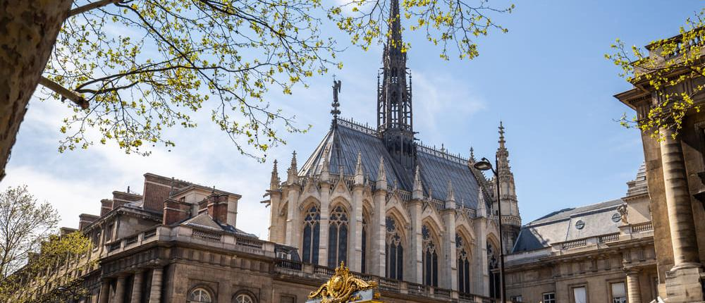

Son arquitectos que nos marcaron e inspiraron para realizar los trabajos que hacemos.
Es considerado uno de los máximos exponentes de la arquitectura moderna y uno de los arquitectos más influyentes del siglo XX.
Frank Gehry es considerado uno de los mayores representantes de la arquitectura moderna de hoy en día. Sus obras forman parte de los fenómenos arquitectónicos más innovadores y distintos que existen en el mundo.
Ganador del premio Pritzker, Piano fue uno de los arquitectos fundamentales para dar forma al concepto que hoy conocemos como arquitectura moderna.
Podemos ayudarte desde el diseño de tu hogar.
Hasta la remodelación de tu casa.